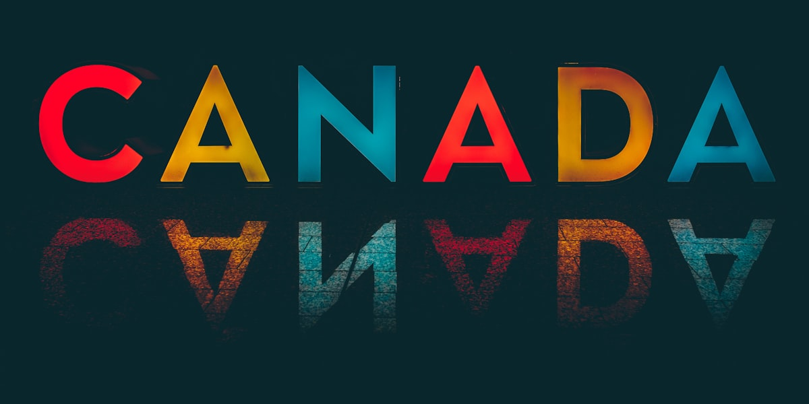

האוכל הקנדי מגוון כמו האנשים שלו — וזה מה שהופך אותו לכל כך טעים!

האוכל הקנדי מגוון כמו האנשים שלו — וזה מה שהופך אותו לכל כך טעים! למרות שלקנדה יש מנות סמליות משלה, סצנת האוכל ברחבי המדינה מעוצבת עמוקות על ידי גלי המהגרים שהביאו איתם את מסורות הבישול שלהם. בטיול בכל עיר גדולה בקנדה, תמצאו מסעדות אותנטיות מעשרות מדינות, מכולות אתניות ושווקי מזון תוססים.
אז מהו קנדי באופן ייחודי? פוטין הוא כנראה המנה המפורסמת ביותר. מקורו בקוויבק, מנה עשירה זו מורכבת מצ'יפס צרפתי מכוסה בגבינת קורד טרייה ורוטב חום עשיר. זה משביע, מנחם וטעים להפליא. תמצאו פוטין בתפריטים בכל רחבי המדינה, ממסעדות יוקרתיות ועד רשתות מזון מהיר. מאכלים קנדיים סמליים נוספים כוללים טארט חמאה (מאפה מתוק עם מילוי דביק), חטיפי ננאימו (קינוח שוקולד ללא אפייה מבריטיש קולומביה), טורטייר (פשטידת בשר צרפתית-קנדית הנאכלת באופן מסורתי בחג המולד) וכריכי בשר מעושן בסגנון מונטריאול.
סירופ מייפל הוא מוצר קנדי אהוב ומקור לגאווה לאומית. קנדה מייצרת כ-70% מסירופ המייפל בעולם, כאשר קוויבק הוא היצרן הגדול ביותר. סירופ מייפל משמש לא רק כתוספת לפנקייקים אלא גם בבישול, באפייה ואפילו בקוקטיילים. בכל אביב, «בקתות הסוכר» (cabanes à sucre) בקוויבק פותחות את דלתותיהן לחגיגות עונתיות הכוללות הכל בטעם מייפל — זהו טקס מעבר לכל מי שגר ליד קוויבק.
פירות ים הם אבן יסוד של תרבות האוכל במחוזות הימיים ובבריטיש קולומביה. לובסטר טרי, צדפות דיגבי, מידיות איי הנסיך אדוארד וסלמון מהאוקיינוס השקט הם מבין פירות הים המשובחים ביותר שתוכלו למצוא בכל מקום בעולם. אלברטה מפורסמת בבשר הבקר שלה — בקר שגודל באלברטה מייצר כמה מהסטייקים הטובים ביותר בצפון אמריקה.
כעולים חדשים, תעריכו גם את העובדה שמכולות ושווקים קנדיים מציעים מגוון רחב של מרכיבים בינלאומיים. ברוב הערים יש מכולות אתניות שבהן תוכלו למצוא מרכיבים מהבית. לערים גדולות יש לעתים קרובות שכונות שלמות המוקדשות לתרבויות אוכל ספציפיות — צ'יינה טאון, ליטל אינדיה, ליטל פורטוגל, ליטל איטלי — שם בישול אותנטי נמצא במרחק הליכה קצר.
יועצי ההגירה המוסמכים שלנו כאן להדריך אתכם בכל שלב בדרך.